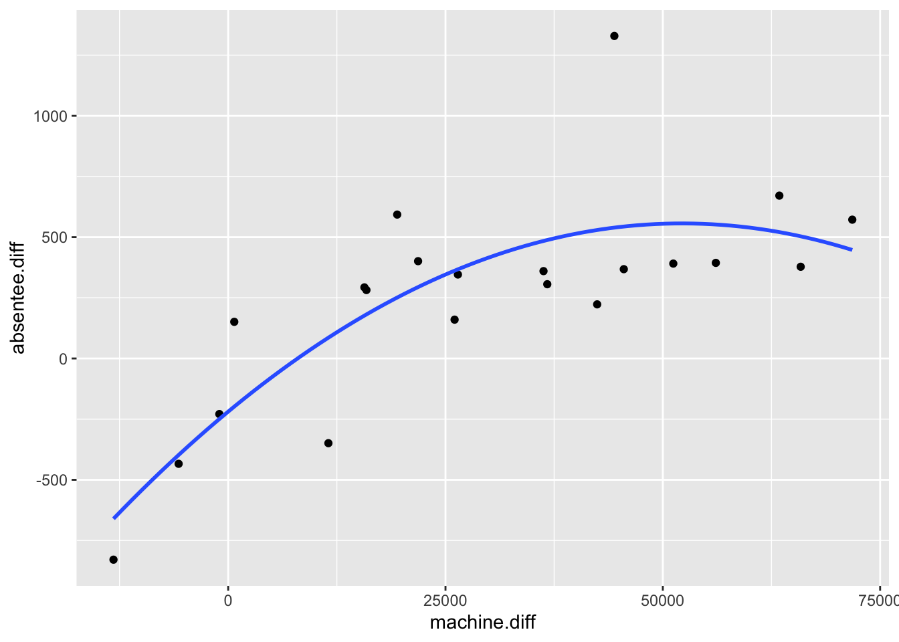

Chapter 8 Matrix notation for linear models
Any linear model can be represented using the same matrix notation. This is useful because any result or technique derived using the matrix notation can then be applied to all linear models.
To illustrate the notation consider the simple linear regression model \[ Y_i=\beta_0+\beta_1 x_i +\varepsilon_i, \] for \(i=1,\ldots,n\). We write it in matrix form as \[ \mathbf{Y} = X\boldsymbol{\beta}+ \boldsymbol{\varepsilon}, \] with \[ \mathbf{Y}=\left(\begin{array}{c}Y_1 \\ Y_2 \\ \vdots \\ Y_n\end{array}\right),\quad X=\left(\begin{array}{cc}1& x_1 \\ 1& x_2 \\ \vdots & \vdots \\ 1& x_n\end{array}\right),\quad \boldsymbol{\beta}=\left(\begin{array}{c}\beta_0 \\ \beta_1\end{array}\right),\quad \boldsymbol{\varepsilon}=\left(\begin{array}{c}\varepsilon_1 \\ \varepsilon_2 \\ \vdots \\ \varepsilon_n\end{array}\right). \] We also define \(\mathbf{Y}=(y_1,\ldots,y_n)^T\) as the vector of observed dependent variables.
The matrix \(X\) is known as the design matrix and the vector \(\boldsymbol{\beta}\) is sometimes referred to as the parameter vector.
8.1 Least squares estimates in matrix form
For any linear model in matrix form, it can be shown that the least squares estimate is given by
\[\begin{equation} \hat{\boldsymbol{\beta}}=(X^TX)^{-1}X^T\mathbf{y}.\tag{8.1} \end{equation}\]
This is (probably!) the most important formula in the theory of linear models, because we can use it to obtain parameter estimates for any linear model.
8.1.1 Example: fitting a polynomial regression model
Consider again the election data. We could try fitting a polynomial regression model, as the relationship between independent and dependent variables looks nonlinear: \[ Y_i=\beta_0+\beta_1 x_i +\beta_2 x_i^2 + \varepsilon_i. \] How do we estimate \((\beta_0,\beta_1,\beta_2)\)? The same argument of choosing \((\beta_0,\beta_1,\beta_2)\) to make the errors small still holds. Following the approach in the previous chapter, we would have to solve simultaneously the following three equations: \[ \frac{\partial}{\partial \beta_0}\sum_{i=1}^n \varepsilon_i^2=0,\quad \frac{\partial}{\partial \beta_1}\sum_{i=1}^n \varepsilon_i^2=0,\quad \frac{\partial}{\partial \beta_2}\sum_{i=1}^n \varepsilon_i^2=0, \] with \(\varepsilon_i = y_i -\beta_0-\beta_1 x_i -\beta_2 x_i^2\). However, with matrix notation we already have the answer. We again write the model as \[ \mathbf{Y} = X\boldsymbol{\beta} + \boldsymbol{\varepsilon}, \] now with \[ \mathbf{y}=\left(\begin{array}{c}y_1 \\ y_2 \\ \vdots \\ y_n\end{array}\right),\quad X=\left(\begin{array}{ccc}1& x_1 &x_1^2\\ 1& x_2 &x^2_2\\ \vdots & \vdots & \vdots \\ 1 &x_n & x_n^2\end{array}\right),\quad \boldsymbol{\beta}=\left(\begin{array}{c}\beta_0 \\ \beta_1\\ \beta_2\end{array}\right),\quad \boldsymbol{\varepsilon}=\left(\begin{array}{c}\varepsilon_1 \\ \varepsilon_2 \\ \vdots \\ \varepsilon_n\end{array}\right). \] As before, we have \(\sum_{i=1}^n \varepsilon_i^2 = \boldsymbol{\varepsilon}^T\boldsymbol{\varepsilon}\), and so we must solve \[ \left(\begin{array}{c}\frac{\partial}{\partial \beta_0} \boldsymbol{\varepsilon}^T\boldsymbol{\varepsilon}\\ \frac{\partial}{\partial \beta_1} \boldsymbol{\varepsilon}^T\boldsymbol{\varepsilon} \\ \frac{\partial}{\partial \beta_2} \boldsymbol{\varepsilon}^T\boldsymbol{\varepsilon}\end{array}\right)=\left(\begin{array}{c}0 \\ 0\\ 0\end{array}\right), \] i.e. \(\frac{\partial \boldsymbol{\varepsilon}^T\boldsymbol{\varepsilon}}{\partial \boldsymbol{\beta}} = \mathbf{0}\). Hence our least squares estimate is \(\hat{\boldsymbol{\beta}}=(\hat{\beta_0},\hat{\beta_1},\hat{\beta}_2)^T=(X^TX)^{-1}X^T\mathbf{y}\). For the election data this gives \[ \hat{\boldsymbol{\beta}}=\left(\begin{array}{c}-219.0071 \\ 0.0297 \\ -2.8455\times 10^{-7} \\ \end{array}\right) \]
The line \(y=-219.0071 + 0.0297x -(2.8455\times 10^{-7})x^2\) is drawn on the election scatter plot below.

Note that the key step in obtaining parameter estimates is simply to identify the form of the design matrix \(X\). Once we have \(X\) and \(\mathbf{y}\), we just use equation (8.1).
Example 8.1 (Linear model in matrix form: weights example.)
Solution
We have \[ \mathbf{Y} = X\boldsymbol{\beta}+ \boldsymbol{\varepsilon}, \] with \[ \mathbf{Y}=\left(\begin{array}{c}Y_1 \\ Y_2 \\ Y_3\end{array}\right),\quad X=\left(\begin{array}{cc} 1 & 0 \\ 0 & 1 \\ 1 & 1\end{array}\right),\quad \boldsymbol{\beta}=\left(\begin{array}{c}\theta_A \\ \theta_B\end{array}\right),\quad \boldsymbol{\varepsilon}=\left(\begin{array}{c}\varepsilon_1 \\ \varepsilon_2 \\ \\ \varepsilon_3\end{array}\right). \]
Then the least squares estimates are obtained as \[ (X^TX)^{-1}X^T\mathbf{y}, \] with \(\mathbf{y}=(y_1,y_2,y_3)^T\) the vector of observed measurements. We’ll find \((X^TX)^{-1}X^T\) using R:
X <- matrix(c(1, 0, 1,
0, 1, 1),
nrow = 3, ncol = 2)
solve(t(X) %*% X) %*% t(X)## [,1] [,2] [,3]
## [1,] 0.6666667 -0.3333333 0.3333333
## [2,] -0.3333333 0.6666667 0.3333333and from this, we can see that \((X^TX)^{-1}X^T\mathbf{y}\) will give \[ \hat{\theta}_A = \frac{2y_1 -y_2 + y_3}{3}, \quad \hat{\theta}_B = \frac{2y_2 -y_1 + y_3}{3}. \]
8.2 Estimate of \(\sigma^2\) in matrix form
Using the matrix notation, the vectors of fitted values and residuals are, respectively, given by \[ \hat{\mathbf{y}}:= X\hat{\boldsymbol{\beta}}, \quad \mathbf{e}:=\mathbf{y}-\hat{\mathbf{y}}, \] We can then write the estimate of \(\sigma^2\) as \[ \hat{\sigma}^2 = \frac{\mathbf{e}^T\mathbf{e}}{n-p}, \] where \(n\) is the length of the vector \(\mathbf{e}\) and \(p\) is the length of the vector \(\hat{\boldsymbol{\beta}}\).
8.3 Derivation of \(\hat{\beta}\)
This section is included for reference, but you may skip it if you wish.
We first give some notation and results for differentiating with respect to a vector. Let \(\mathbf{z}\) be an \(r\times 1\) column vector \((z_1,\ldots,z_r)^T\) and let \(f(z_1,\ldots,z_r)\) be some function of \(\mathbf{z}\). We define \[ \frac{\partial f(z_1,\ldots,z_r)}{\partial \mathbf{z}}=\left(\begin{array}{c}\frac{\partial f(z_1,\ldots,z_r)}{\partial z_1} \\ \vdots \\ \frac{\partial f(z_1,\ldots,z_r)}{\partial z_r}\end{array}\right). \] For any \(r\times 1\) column vector \(\mathbf{a}=(a_1,\ldots,a_r)^T\) we have \[ \frac{\partial \mathbf{a}^T\mathbf{z}}{\partial \mathbf{z}}=\frac{\partial (a_1z_1+\ldots + a_rz_r)}{d \mathbf{z}}=(a_1,\ldots,a_r)^T=\mathbf{a}. \] If \(M\) is a square \(r\times r\) matrix then \[ \frac{\partial(\mathbf{z}^TM\mathbf{z})}{\partial \mathbf{z}}=(M+M^T)\mathbf{z}. \] Proof: Let \(m_{ij}\) represent the \(ij\)th element of \(M\). Now \((M+M^T)\mathbf{z}\) is a column vector with the \(k\)th element given by \(\sum_{i=1}^r m_{ki}z_i + \sum_{i=1}^r m_{ik}z_i\). Hence we must show that \[ \frac{\partial(\mathbf{z}^TM\mathbf{z})}{\partial z_k}=\sum_{i=1}^r m_{ki}z_i + \sum_{i=1}^r m_{ik}z_i. \] From the product rule \[\begin{eqnarray*} \frac{\partial(\mathbf{z}^TM\mathbf{z})}{\partial z_k}&=&\mathbf{z}^T \frac{\partial( M\mathbf{z})}{\partial z_k}+\left(\frac{\partial \mathbf{z}^T}{\partial z_k}\right)M\mathbf{z}\\ &=&(z_1,\ldots,z_r)\left(\begin{array}{c}\frac{\partial}{\partial z_k} \sum_{i=1}^r m_{1i}z_i \\ \vdots \\ \frac{\partial}{\partial z_k} \sum_{i=1}^r m_{ri}z_i \end{array}\right)\\&& + (0,\ldots,0,1,0,\ldots,0) \left(\begin{array}{c}\sum_{i=1}^r m_{1i}z_i \\ \vdots \\ \sum_{i=1}^r m_{ri}z_i \end{array}\right), \end{eqnarray*}\] (with \((0,\ldots,0,1,0,\ldots,0)\) a vector of zeros with the \(k\)th element replaced by a 1) \[\begin{eqnarray*} &=& (z_1,\ldots,z_r)\left(\begin{array}{c} m_{1k} \\ \vdots \\ m_{rk} \end{array}\right) + (0,\ldots,0,1,0,\ldots,0) \left(\begin{array}{c}\sum_{i=1}^r m_{1i}z_i \\ \vdots \\ \sum_{i=1}^r m_{ri}z_i \end{array}\right)\\ &=& \sum_{i=1}^r m_{ik}z_i+\sum_{i=1}^r m_{ki}z_i, \end{eqnarray*}\] as required.
Now, note that \[ \sum_{i=1}^n \varepsilon_i^2 = \boldsymbol{\varepsilon}^T\boldsymbol{\varepsilon} = (\mathbf{y}-X\boldsymbol{\beta})^T(\mathbf{y}-X\boldsymbol{\beta}) \]
Hence in vector notation, to minimise the sum of squared errors we must solve the equation \[\frac{\partial \boldsymbol{\varepsilon}^T\boldsymbol{\varepsilon}}{\partial \boldsymbol{\beta}} = \mathbf{0}.\] Now \[\begin{eqnarray} \frac{\partial \boldsymbol{\varepsilon}^T\boldsymbol{\varepsilon}}{\partial \boldsymbol{\beta}} &=& \frac{\partial }{\partial \boldsymbol{\beta}} (\mathbf{y}-X\boldsymbol{\beta})^T(\mathbf{y}-X\boldsymbol{\beta})\\ &=& \frac{\partial }{\partial \boldsymbol{\beta}} \left(\mathbf{y}^T \mathbf{y} -\boldsymbol{\beta}^TX^T\mathbf{y} -\mathbf{y}^TX\boldsymbol{\beta} + \boldsymbol{\beta}^T(X^T X)\boldsymbol{\beta}\right)\\ &=& - X^T\mathbf{y} - (\mathbf{y}^T X)^T +\left\{(X^TX)^T+ (X^TX)\right\}\boldsymbol{\beta}\\ &=&-2X^T\mathbf{y} + 2(X^TX)\boldsymbol{\beta}. \end{eqnarray}\] Finally, when \(\boldsymbol{\beta}=\hat{\boldsymbol{\beta}}\), the least squares estimator, we have \[ \mathbf{0}=-2X^T\mathbf{y} + 2(X^TX)\hat{\boldsymbol{\beta}},\label{normalequation} \] (sometimes referred to as the normal equation) which gives us the result \[ \hat{\boldsymbol{\beta}}=(X^TX)^{-1}X^T\mathbf{y}. \]